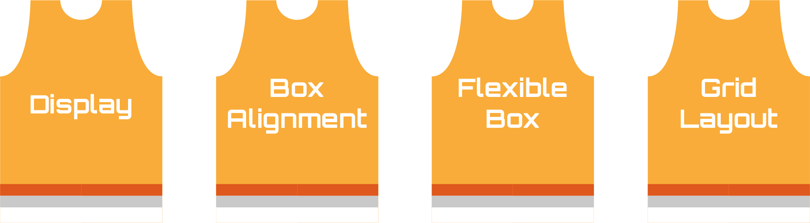
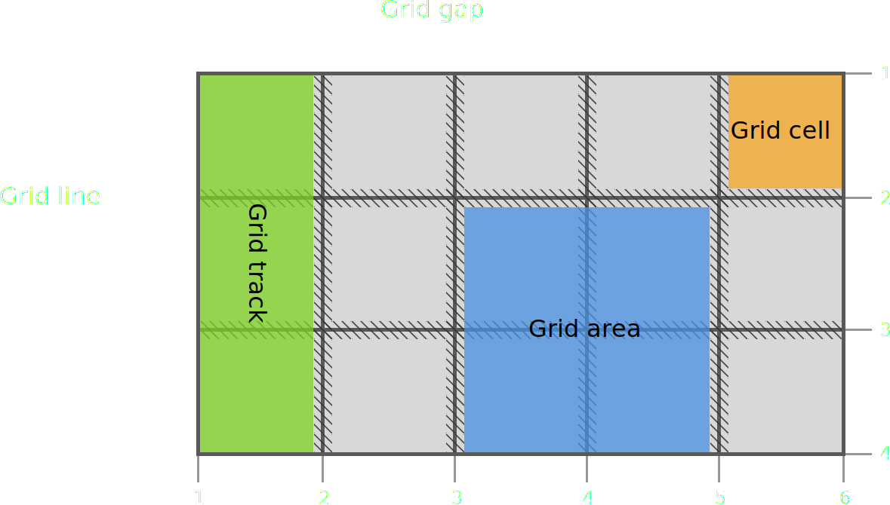

2017: the year of CSS Grid
Revolutionising visual design on the web


Web layouts over the years


CSS Grid arrives
“Our ‘Age of Anxiety’ is, in great part, the result of trying to do today's job with yesterday's tools—with yesterday's concepts.”
—Marshall McLuhan
Grid browser support

Team Layout

And more...
Team Layout

CSS properties
Grid versus Flexbox?
Wrong question
Grid AND Flexbox


Flexbox ➡ single dimension

What is CSS grid?
Defines a two-dimensional grid-based layout system, optimized for user interface design.
“Grid works from the container in, other layout methods start with the item”
—Rachel Andrew
Layout technique: inline-block
Item A
Item B
Item C
Item D
Item E
Item F
Layout technique: float
Item A
Item B
Item C
Item D
Item E
Item F
Layout technique: flex
Item A
Item B
Item C
Item D
Item E
Item F
“Grid is the only layout technique that establishes a relationship between rows and columns of grid items.”
CSS grid basics
Define your grid.

Place items in the grid.

Defining the Grid
body {
display: grid;
grid-template-columns: 25% 25% 25% 25%;
grid-template-rows: 20em 1fr 20em;
}The grid formatting context only applies to child elements
Explicit Grid and Implicit Grid
.grid-container {
display: grid;
grid-template-columns: 150px 150px 150px; /* three columns */
grid-template-rows: 150px 150px; /* two rows */
}
.item {
grid-column: 5 / 6; /* grid-column-start: 5; grid-column-end: 6; */
grid-row: 2 / 3; /* grid-row-start: 2; grid-row-end: 3; */
}The browser will create an implicit grid to hold items placed outside the grid.
“Cede control of your designs to the browsers that render them.”
The repeat() function
To specify a large number of columns or rows that follow a similar pattern
repeat( [ <positive-integer> | auto-fill | auto-fit ] , <track-list> )auto-fill vs. auto-fit
Allow browser to determine how many tracks to create depending on track size.

repeat(auto-fill, 100px);
repeat(auto-fit, 100px);auto-fit collapses empty tracks.
A
B
C
D
E
F
Fixed CSS grid
.container {
display: grid;
grid-template-columns: repeat(5, 10em);
}The fr unit
Represents a fraction of the free space in the grid container.
Fluid CSS grid
.container {
display: grid;
grid-template-columns: repeat(3, 3fr 2fr);
}The minmax() function
Defines a size range greater than or equal to min and less than or equal to max.
Responsive CSS grid
.container {
display: grid;
grid-template-columns: repeat(5, minmax(10em, 1fr));
}Basic terminology
Named areas
.grid-container {
display: grid;
grid-template-areas: "logo stats"
"score stats"
"board board"
"... controls";
}
.logo { grid-area: logo; }
.score { grid-area: score; }
.stats { grid-area: stats; }
.board { grid-area: board; }
.controls { grid-area: controls; }Aligning your grid items
| Property | Axis | Aligns | Applies to |
|---|---|---|---|
justify-content |
main/inline | content within element  |
block containers, flex containers and grid containers |
align-content |
cross/block | ||
justify-self |
inline | element within parent |
block-level boxes, absolutely-positioned boxes and grid items |
align-self |
cross/block | absolutely-positioned boxes, flex items and grid items |
|
justify-items |
inline | items inside box  |
block containers and grid containers |
align-items |
cross/block | flex-containers and grid-containers |
Source: CSS Box Alignment Module Level 3
justify/align-content
content-distribution properties
| Values | justify-content |
align-content |
|---|---|---|
center |
 |
 |
start |
 |
 |
end |
 |
 |
space-around |
 |
 |
space-between |
 |
 |
space-evenly |
 |
 |
justify/align-self
self-alignment properties
justify/align-items
defaults for justify/align-self


Self-alignment properties, maybe?

Flexbox to the rescue

Vertical whitespace
grid-row and grid-column
grid-template-columns: [first sidebar-start] 250px [content-start] 1fr [last];
grid-template-rows: [first header-start] 100px [content-start] 1fr [footer-start] 100px [last];
Item A
Item B
Item C


.steuergerät {
grid-gap: 0.5em;
grid-template-columns: 50% 50%;
grid-template-areas: "title title"
"text text"
"key key"
"detail1 detail2"
"detail3 detail4";
}
@media screen and (min-aspect-ratio: 1/1) and (min-height: 22em) {
.steuergerät {
grid-template-columns: 18.75em 1fr 1fr 1fr;
grid-template-rows: calc((100vh - 3em) / 3) calc((100vh - 3em) / 3) calc((100vh - 3em) / 3);
grid-template-areas: "title detail1 key key"
"text detail2 key key"
"text detail3 detail4 braun";
}
}
@media screen and (min-aspect-ratio: 8/5) and (min-height: 36em) {
.steuergerät {
grid-template-columns: 17.5em 1fr 3fr 1fr 1fr;
grid-template-rows: calc((100vh - 3em) / 3) calc((100vh - 3em) / 3) calc((100vh - 3em) / 3);
grid-template-areas: "title . key . ."
"text detail1 key detail2 detail3"
"text . . detail4 .";
}
}Overlap
.container {
display: grid;
grid-template-columns: repeat(9, 1.25em);
grid-template-rows: repeat(6, 1.25em);
}
h2 {
grid-row: 3 / 5;
grid-column: 1 / 10;
}
.container::before {
grid-row: 1 / 7;
grid-column: 1 / 7;
}
.container::after {
grid-row: 1 / 7;
grid-column: 4 / 10;
}Building a grid layout

Design credit: Drew Sullivan


“Websites do NOT have to look the same in every browser.”

main {
max-width: 45em;
margin: 0 auto;
position: relative;
padding: 1em;
}
_:-ms-input-placeholder, :root main {
display: block;
}
h1 {
margin-bottom: 0.25em;
}
h2 {
margin-bottom: 1em;
}
.about {
margin-bottom: 1em;
}
a {
margin-bottom: 2em;
}
button {
padding: 1em 2em;
position: absolute;
right: 1em;
bottom: 1em;
}
@supports (display:grid) {
@media (min-width: 42em) and (min-height: 27em) {
main {
max-width: none;
padding: 0;
display: grid;
grid-template-columns: 2fr minmax(10em, max-content) minmax(14em, max-content) minmax(1em, 1fr) fit-content(28em) calc(2em + 0.5vw);
grid-template-rows: 35vh 40vh 15vh 10vh;
}
h1 {
grid-column: 3 / 6;
grid-row: 1 / 2;
z-index: 2;
padding-left: 0.25em;
margin-bottom: initial;
}
h2 {
grid-row: 1 / -1;
grid-column: 6 / 7;
writing-mode: vertical-rl;
margin-bottom: initial;
color: $text;
}
hr {
grid-column: 5 / 6;
grid-row: 2;
height: 6px;
background-color: $text;
width: 20ch;
}
.about {
grid-column: 5 / 6;
grid-row: 2;
align-self: end;
padding-bottom: 4vh;
margin-bottom: initial;
}
a {
grid-column: 5 / 6;
justify-self: end;
align-self: center;
margin-bottom: initial;
&::before {
content: '';
display: block;
height: 4px;
background-color: $accent;
width: 4ch;
margin-bottom: 1em;
}
}
img {
grid-column: 1 / 4;
grid-row: 1 / 4;
}
.location {
grid-column: 3 / 4;
grid-row: 3 / 4;
z-index: 2;
background: $main;
text-align: center;
display: flex;
p {
margin: auto;
}
}
button {
grid-column: 2 / 3;
grid-row: 4 / 5;
position: initial;
padding: 0;
}
}
@media (min-width: 48em) {
hr {
opacity: 1;
}
}
}Fallback with feature queries
A conditional group rule whose condition tests whether the user agent supports CSS property:value pairs.
main {
display: flex;
flex-wrap: wrap;
justify-content: space-between;
}
.title {
width: 100%;
}
.card {
flex: auto;
min-width: 12em;
height: 12em;
}@supports (display:grid) {
main {
display: grid;
grid-template-columns: repeat(auto-fill, minmax(8em, 1fr));
grid-auto-rows: 8em;
}
.title {
width: initial;
}
.card {
min-width: initial;
height: initial;
}
@media screen and (max-width: 383px) {
main {
grid-template-rows: 3em repeat(auto-fill, 8em);
}
}
@media screen and (min-aspect-ratio: 1/1) {
main {
grid-template-columns: repeat(4, minmax(25vw, 5em));
grid-template-rows: repeat(3, calc(100vh / 3));
grid-template-areas: "a b c ."
"d e . f"
"g . h i";
}
}
}Browser support for @supports

.selector {
/* Styles that are supported in old browsers */
}
@supports (property:value) {
.selector {
/* Styles for browsers that support the specified property */
}
}


“CSS isn't a programming language. It's a stylesheet language. We shouldn't expect it to behave like a programming language. It has its own unique landscape and structures, ones that people with programming language mental maps might not expect.”
—Danielle Huntrods
Shape the web we use and build for
- CSS specifications are all on GitHub
- Raising browser bugs can and does make a difference
- Write and talk about CSS features
- Browser developers are people too, provide feedback and be nice about it.


Demos and examples
Useful resources
- CSS Grid Layout Module Level 1
- Codrops CSS Grid reference
- Grid by Example
- Learn CSS Grid
- Grid Auto-Placement Is Ready
- Automatizing the Grid
- Deep Dive into Grid Layout Placement
- CSS Grid Layout and positioned items
- The Story of CSS Grid, from Its Creators
- CSS Grid Layout is Here to Stay
- The New Layout Standard For The Web: CSS Grid, Flexbox And Box Alignment
Discount code: PENANGJS